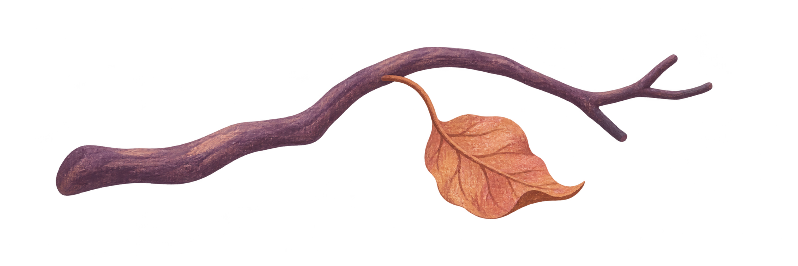
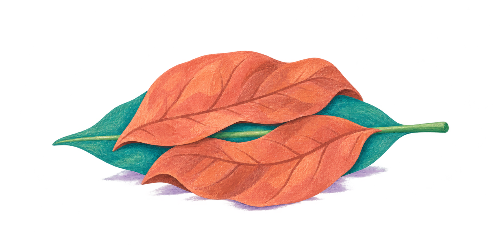
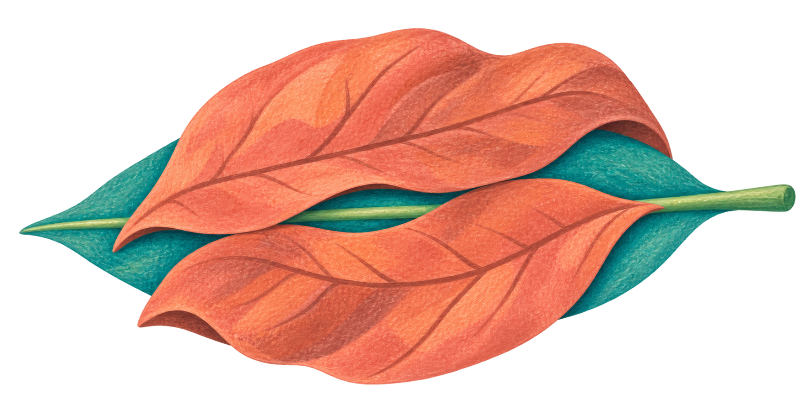
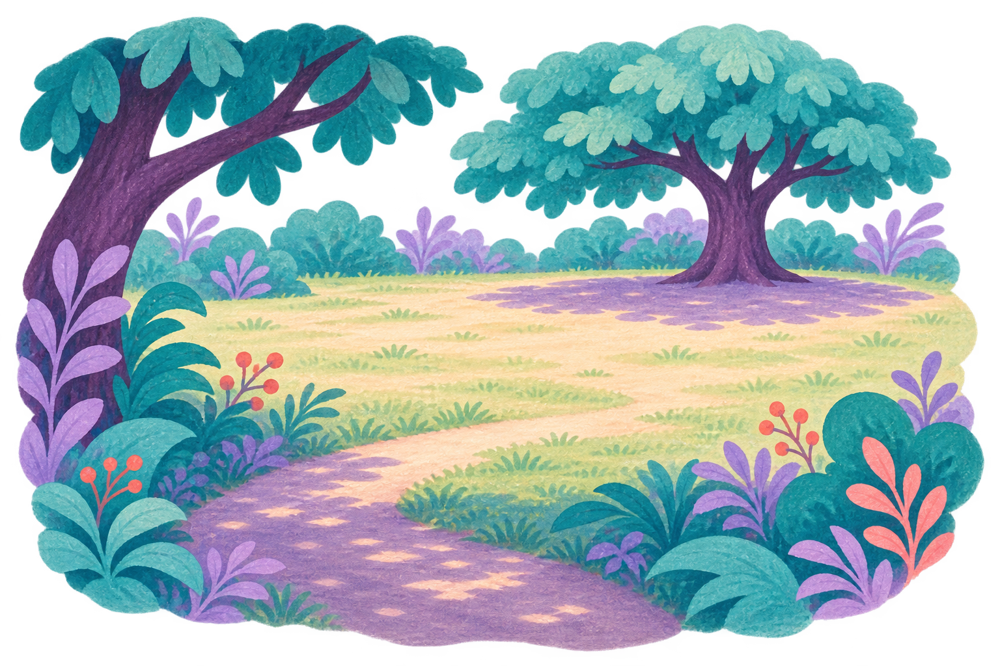
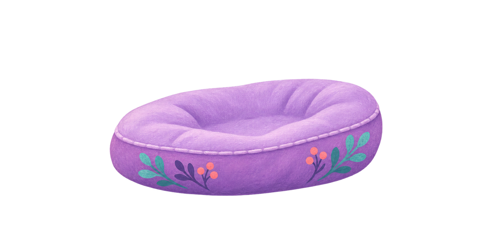
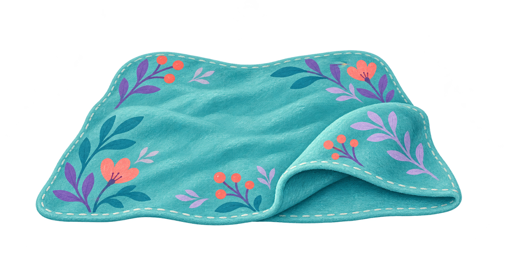
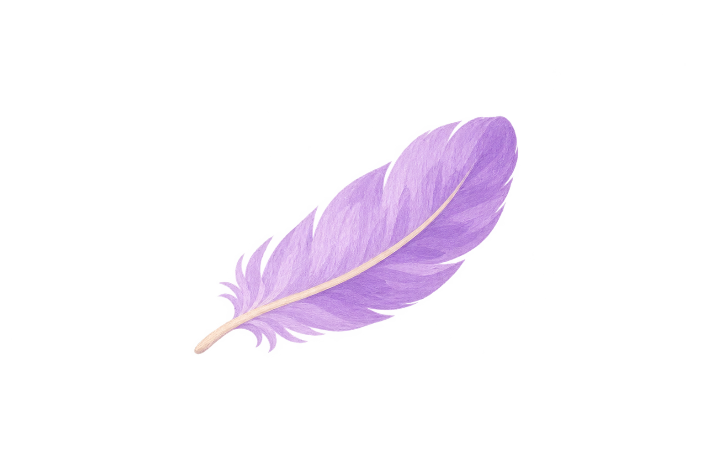
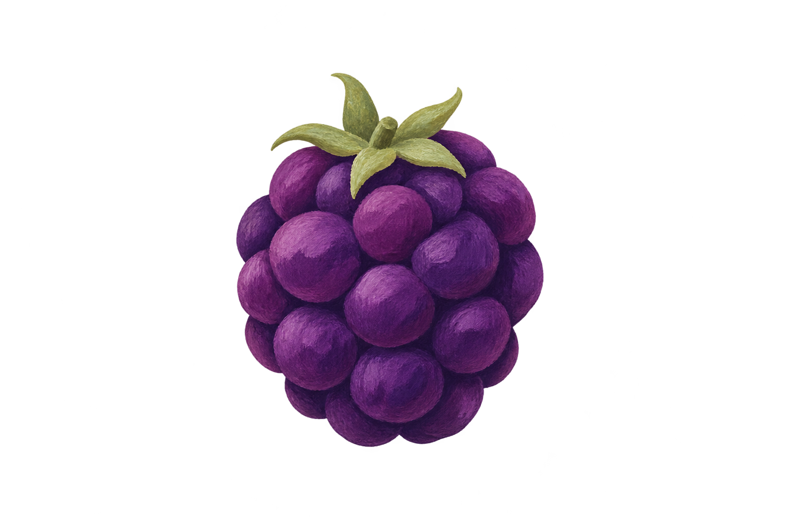
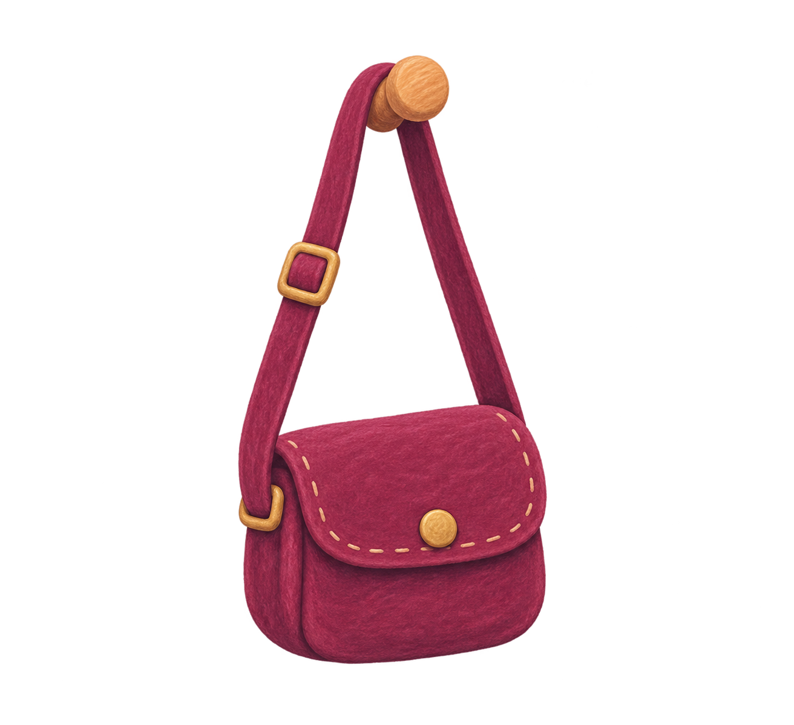

Yaprak–dal: boşluk

leaf_branch_gap3 kaynak sayfa adayı
15 ayrı PNG. Kaynak sayfaları manifestte kayıtlıdır. İnceleme paketi; uygulama eşleşmesi ve yayın onayı değildir.

leaf_branch_gap leaf_branch_contact
leaf_branch_contact
occluded_leaf_overview
occluded_leaf_vein_gap marker_parts_separate_reversed
marker_parts_separate_reversed
clearing_shadow_threshold
resting_cushion
blanket_folded_edge blanket_flat
blanket_flat
small_feather round_stopping_stone
round_stopping_stone
blackberry_fruit leaflike_handkerchief
leaflike_handkerchief
burgundy_bag_on_hook